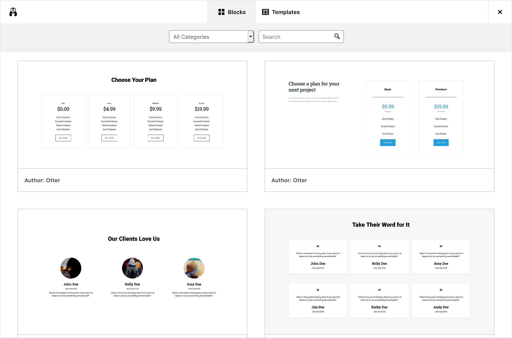

Template Library
Template Library a part of Section block in which allows users to import pre-built section and page templates with one-click import.

It has two Tabs:
- Blocks
- Templates
Blocks contain pre-built sections, such as Pricing, Services of Header, while Templates contain full-page templates, such as a Homepage or an About page.
Adding New Templates
The process of adding new templates to the Template Library is reasonably straightforward.
-
You need to create your block or page template in Gutenberg as you would typically make any layout.
Make sure you test to check it is responsive and works just fine on all devices.
-
Once your template is ready, you need to export it to JSON using Blocks Export Import plugin.
-
Once you have your JSON file, replace links to all the images used in the layout, if any, with links to remote images.
If your template is an official template then you can upload or use pre-uploaded images from: gutenberg-templates/tree/master/assets/images
If the images are coming from a plugin, theme or any third-party resource, you can keep the image in your plugin/theme's assets.
-
Take a screenshot of your section for the display. It is recommended to use your browser's development tools to take a picture of the parent node to get the best output.
-
Once your assets are ready, you can upload them to the gutenberg-templates repository by creating a new folder. The files should be called template.json and screenshot.png.
This step is for when you are making the template to be included in the core of Template Library. If you are adding it from a theme or plugin, see the next section.
-
In the end, you can add your template to $template_list array in class-advanced-columns-server.php file. It will look something like this:
- name: Template Name
- type: Decided in which tab this template it will appear. It can be either
blockortemplate. - author: Author of the template, could be name of the theme or plugin.
- keywords: Keywords that can be used to search.
- categories: Categories that can be used for sorting.
- template_url: Link to template's JSON file.
- screenshot_url: Link to screenshot of the template for preview.
- demo_url: Link to a webpage showing demo of the template.
1 2 3 4 5 6 7 8 9 10 11 12 13 | |
Adding via Theme or Plugin
Once you have generated JSON and screenshot for your template, you can hook it into Template Library using themeisle_gutenberg_templates filter, like this:
1 2 3 4 5 6 7 8 9 10 11 12 13 14 15 16 17 18 19 20 | |